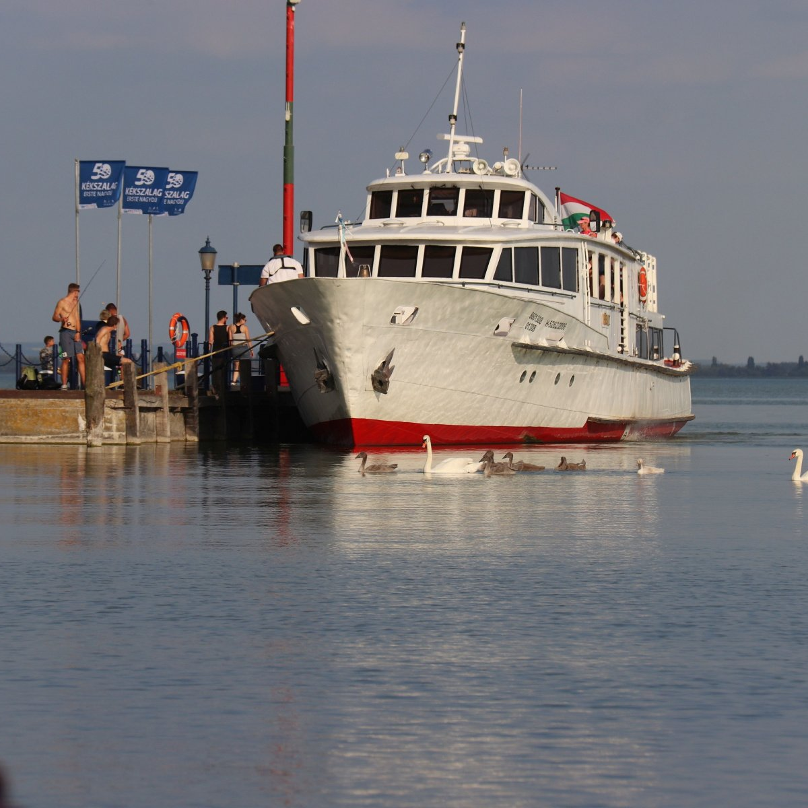
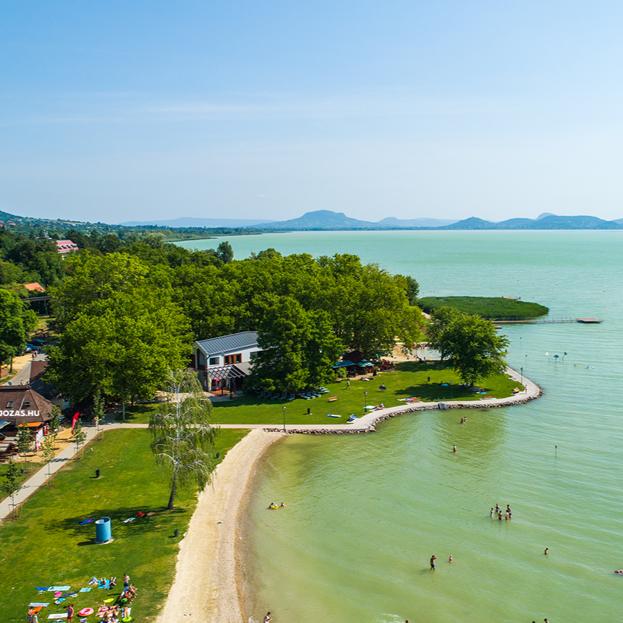
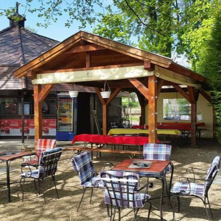
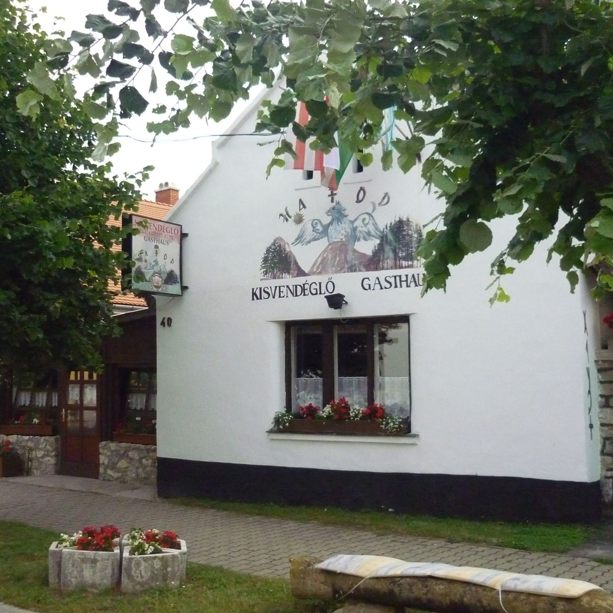
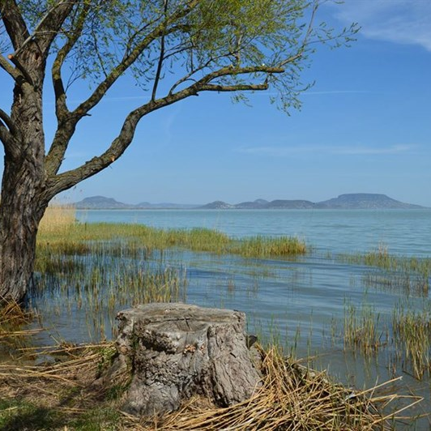
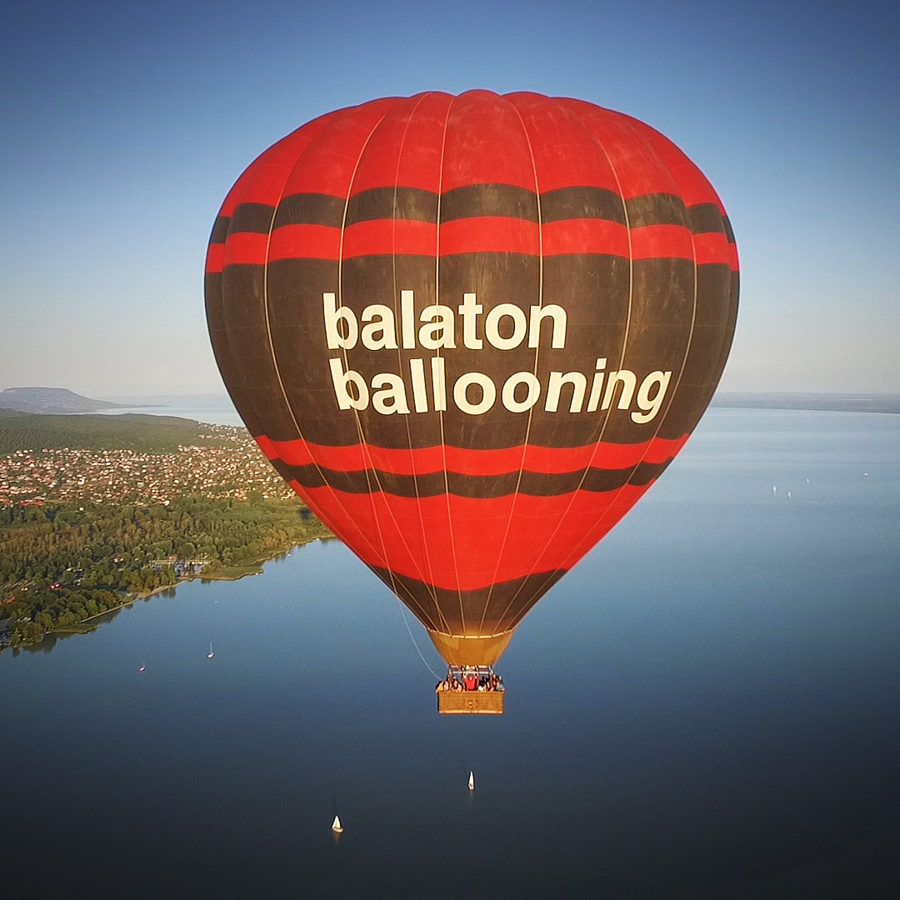

| Vonat Balatongyörökre, minden nap jár: | |
| Vonat indulása: | 9:35, Déli pályaudvar, 852 TÓPART INTERCITY |
| Utazási idő: 2 óra 21 perc | |
| Átszállás: | 12:00 Balatonszentgyörgy, 9604 HELIKON INTERREGIO |
| Utazási idő: 0 óra 23 perc | |
| Érkezés: | 12:23, utazás teljes ára 3710Ft/fő |
| Vonat Budapestre, minden nap jár: | |
| Vonat indulása: | 09:34, Balatongyörök, 9697 HELIKON INTERREGIO |
| Utazási idő: 0 óra 25 perc | |
| Átszállás: | 10:03, Balatonszentgyörgy, 857 TÓPART INTERCITY |
| Utazási idő: 2 óra 21 perc | |
| Érkezés: | 12:24, utazás teljes ára 3710Ft/fő |
|  | Balatongyöröki hajókirándulás: |
| Hajóút a Badacsonyba, 10:45 kor indul és vissza 15:50 kor, 1800Ft/Fő. elérés: séta | |
|  | Balatongyöröki Strand: |
| napi belépő 1 200 Ft/Fő, elérés: séta | |
| Szépkilátó: | |
| Ingyenes, elérés: séta | |
 |
Batsányi kilátó: |
| Ingyenes, elérés: séta | |
|  | Cantine Bár & Grill: |
| Étkezési lehetőség, elérés: séta | |
|  | Hatod Kisvendéglő: |
| Étkezési lehetőség, elérés: séta | |
 |
Pizzakert - Balatongyörök: |
| Étkezési lehetőség, elérés: séta | |
|  | Soós Öböl: |
| Ingyenes, elérés: hosszabb séta, túra | |
| Afrika Múzeum: | |
| 7500Ft/Fő, elérés: séta | |
|  | Hőlégballon: |
| 63 000ft/18fő |
Ellátás és szobák:
Kirándulóhelyek:
Tapolca, Badacsony, Sümeg, Keszthely, Hévíz, KisBalaton
Program lehetõségek:
- táncház
- túrázás
- sportpályák
- (mű füves tenisz, röplabda, strandröplabda, strandfoci,
- multifunkciós foci, kézilabda, kosárlabda, tenisz)
- (ingyenes sportszer használat)
- erdei iskola
- gólya táborok
- szalonnasütés
- szabadtéri színpad
- kirándulások
- kézműves foglalkozások
Közös helyiség:
- nagyterem, kistermek, étterem, piknik liget, szabadtéri színpad
- 5 db elõadó terem (30 40 fõs)
- 1 db nagyterem (300 fõs)
- társalgó
- TV szoba
Szobák:
A földszinten:
- 28 db szoba
- 16 db 5 ágyas
- 12 db 3 ágyas
Emeleten:
- 16 db 3 ágyas
- 8 db 4 ágyas
- 2X2 db apartman (2X10 fõ)
- 1 db 2 ágyas szoba
(minden szobához önálló vizesblokk tartozik)
Látnivalók és szórakozási lehetõségek a környéken
- Balaton felvidék, Káli medence
- Balatonederics : Afrika Múzeum
- Szigligeti vár
- Tapolca: Tavasbarlang
- Sümeg, Keszthely, Hévíz
Egyebek, további információk
- Büfé üzemel
- Erdei iskolák, osztálykirándulások, gólyatáborok, konferenciák, továbbképzések szervezésére alkalmas hely.
Szolgáltatások:
- WC
- Wifi Internet
- zuhanyzó / fürdőkád
- bolt
- buszparkoló
- büfé
- csónakázás
- csónaktároló
- ebédlő
- étterem
- füves kert
- hűtőszekrény
- játszóudvar
- játszótér
- kikötű
- konferenciahelyszín
- konyha
- különterem
- parkoló
- portaszolgálat
- stég
- társalgó
- telefon
- teniszpálya
- TV
- udvari tűzhely
- zárt parkoló
Utazás
Vonatttal a leggyorsabb és legkönnyebb
Budapest Déli Pályaudvar->Keszthely->Balatongyörök